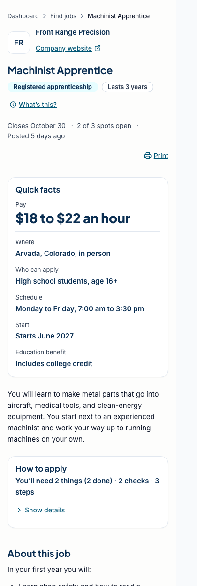
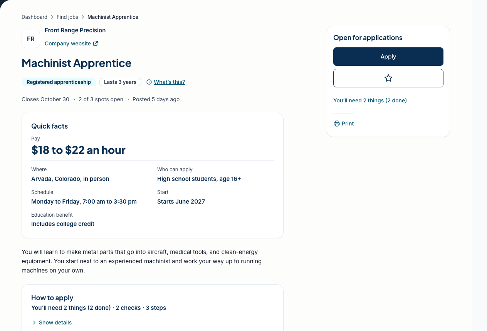

Case study 01
A single posting page with 16 states, resolved by priority
- Role
- Primary designer: plan, research, prototype
- Team
- My supervisor set requirements and reviewed; engineering ports it
- Timeline
- Oct 8 to 14, 2026, two iterations
- State
- Prototype, in review
- Tools
- Figma · React + TypeScript, built to one HTML file · Claude Code

This was the first page I owned from the plan to the prototype, and I kept picturing one reader the whole time: someone who's sixteen, reading a job posting on their phone between classes, maybe in their second language. Most of the design is about not wasting their thirty seconds.
Problem
The old page buried the application steps inside the job description and had no answer for what happens after you apply, or what you see when a job closes, pauses or changes while your application is pending. The kickoff added new states and loosened some "required" fields, so engineering and design were working from different lists.
What I did
- Wrote the plan first: six principles, a field-by-field table of what shows when a value is missing, and a state table where the first true row wins.
- Spent half a day on the job sites students already use, with one question per column: how they show missing pay, what an expired link shows, where Apply sits while you scroll.
- Built the page as a self-contained HTML prototype on the product's tokens, with five test postings and every state switchable from a control bar, so a review could jump to any case in one click.
- Ran seven independent reviews of the first iteration, one lens each (the teen reader, structure, visual hierarchy, accessibility, product states, copy, implementation), and merged them into one change list. The reviews and the prototype scaffolding were AI-assisted; the plan, the state model and every design call are mine.
- Kept the applicant copy free of system words: "in person" instead of "on-site", "vaccines" instead of "immunizations". Empty sections disappear, but pay says "Pay not listed", because its absence matters.
- Treated print as a real deliverable, because counselors print postings. Every list is open and links print their URLs.
Result
Iteration two put pay at the top as the biggest thing on the page, stated every fact once, rendered sections only when they add something, and collapsed "How to apply" to one line that expands. The state model grew from 13 to 16, and when there's nothing to do, the sticky bar and checklist go away. The longest test posting went from about seven phone screens to about four. It went to my supervisor for review in mid-October 2026.


What I'd change: run it with a few real students. Every review so far has been an expert or an AI lens, not a sixteen-year-old, and that's the person it's for.